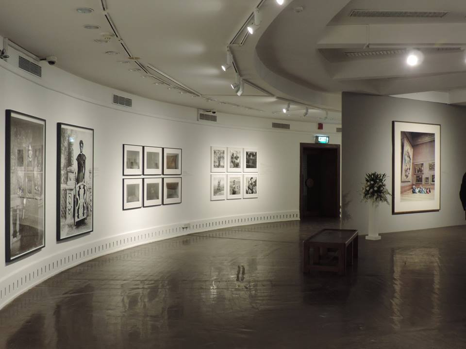
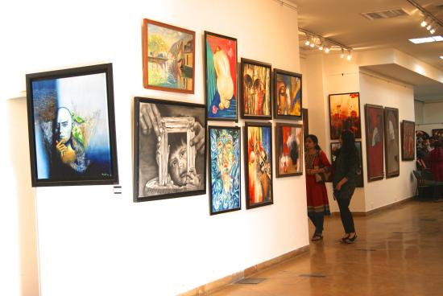

Indiaart features paintings, sculptures and exhibitions by professional artists, emerging artists as well as child artists. Indiaart has taken special efforts to document the contribution made by old masters to Indian art. "Art Marketplace" on Indiaart enables art collectors to buy and sell art.
The Monalisa Kalagram is the dream venture of mother daughter duo, Mona and Lisa Pingale. Set in the serene (when the train is not thundering past, that is) and verdant Pingale Farms, the gallery wishes to not just display art but to nurture and promote all arts, visual, performing or written.
